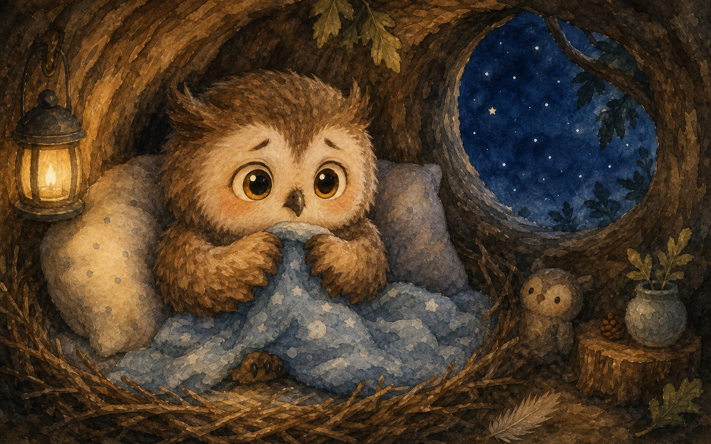
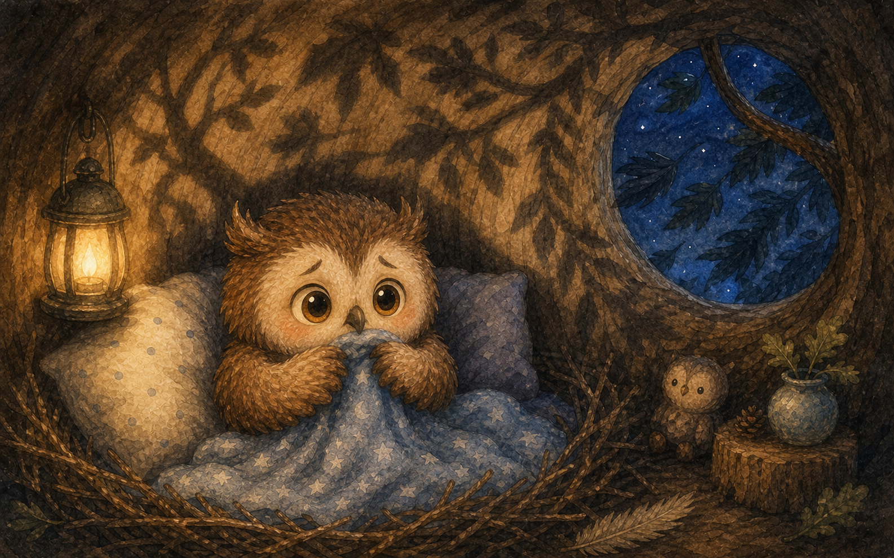
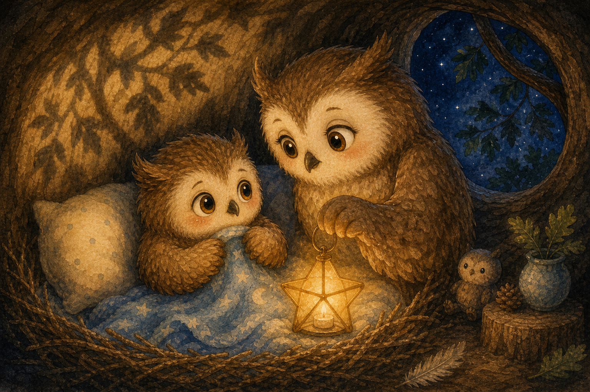
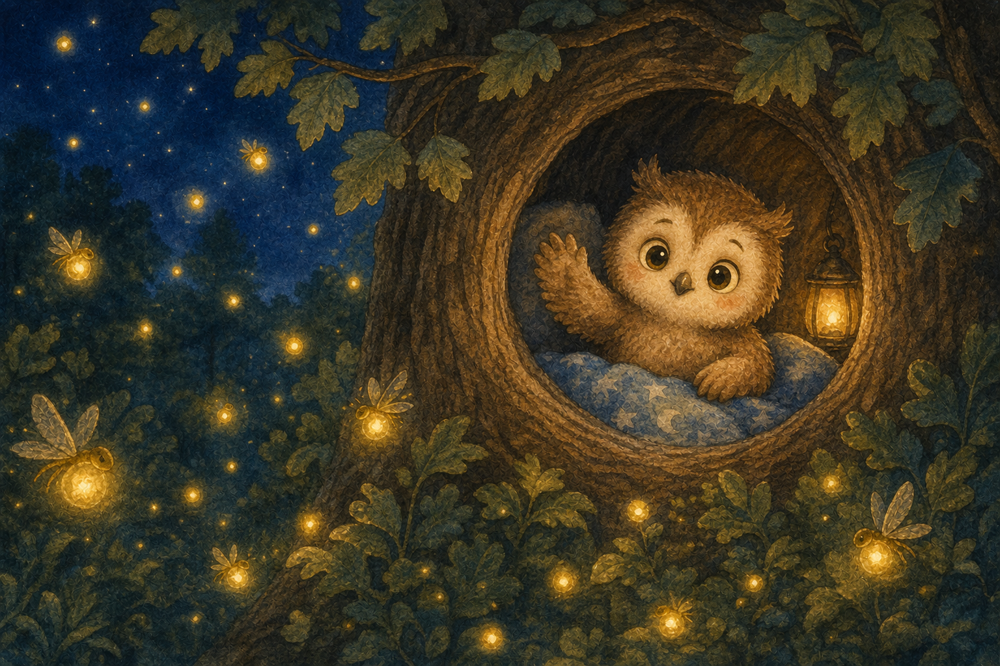
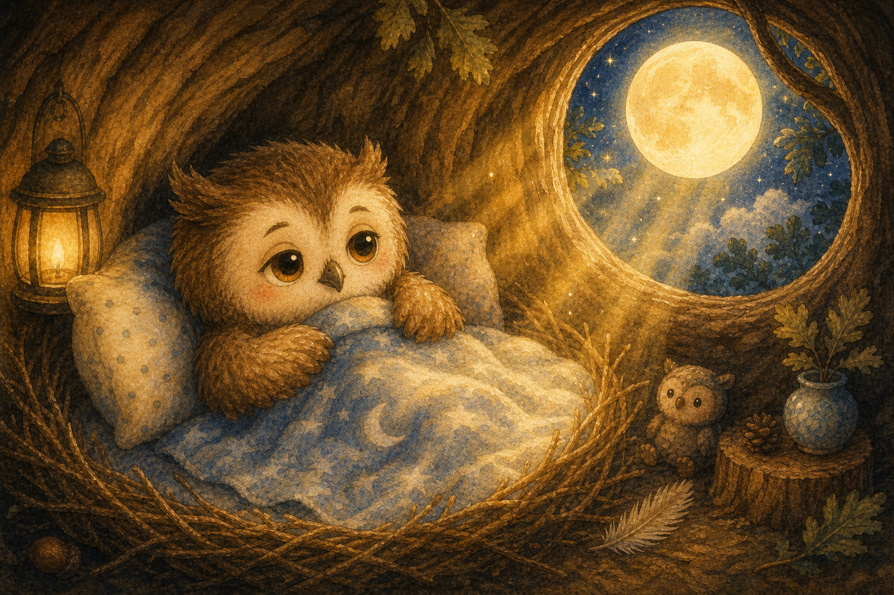
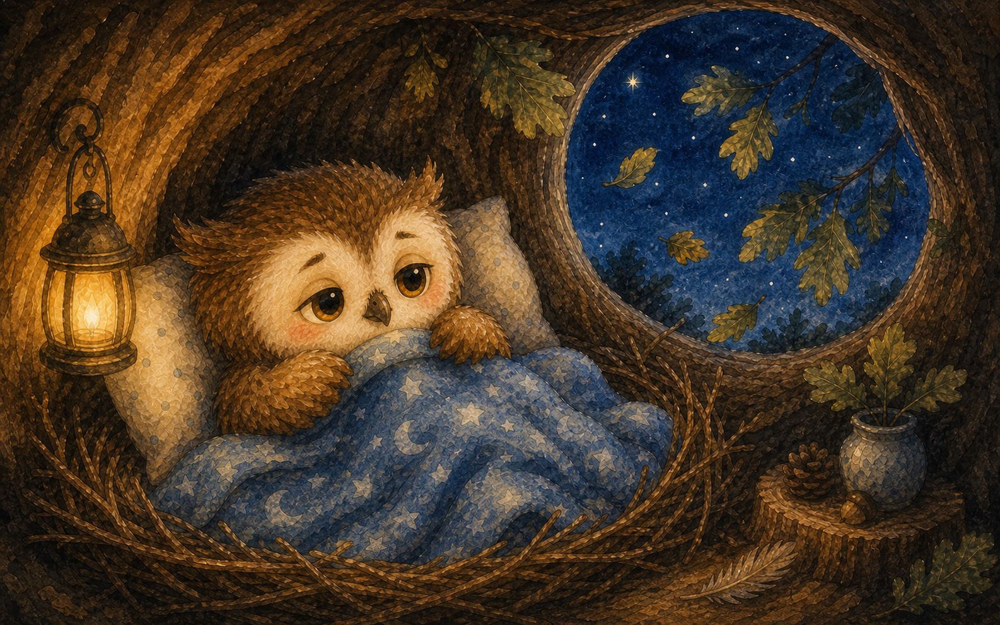
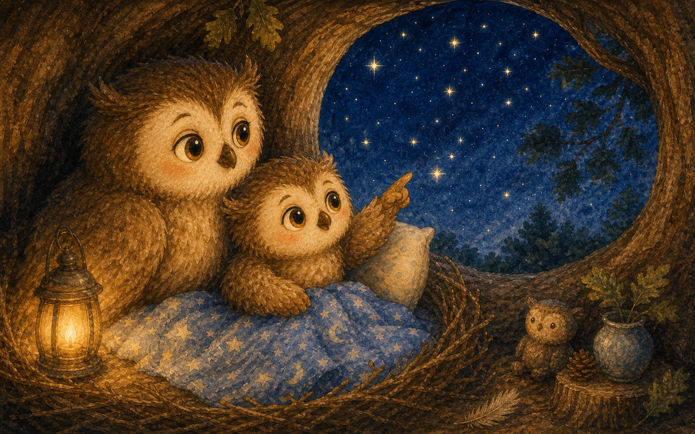
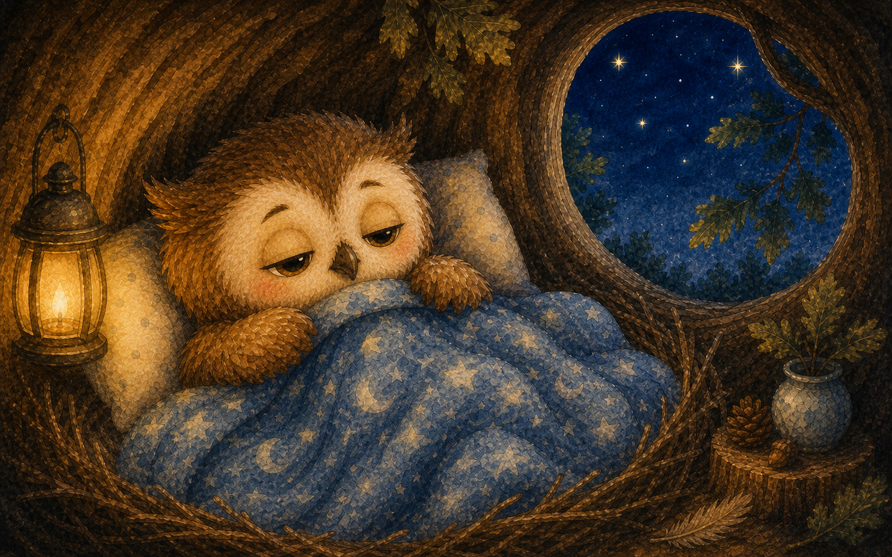
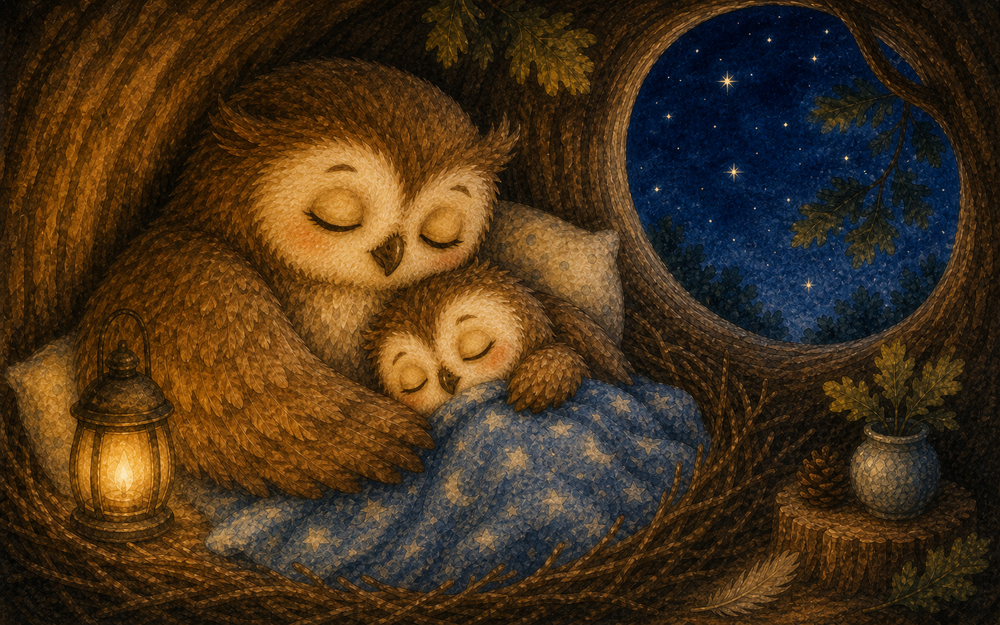
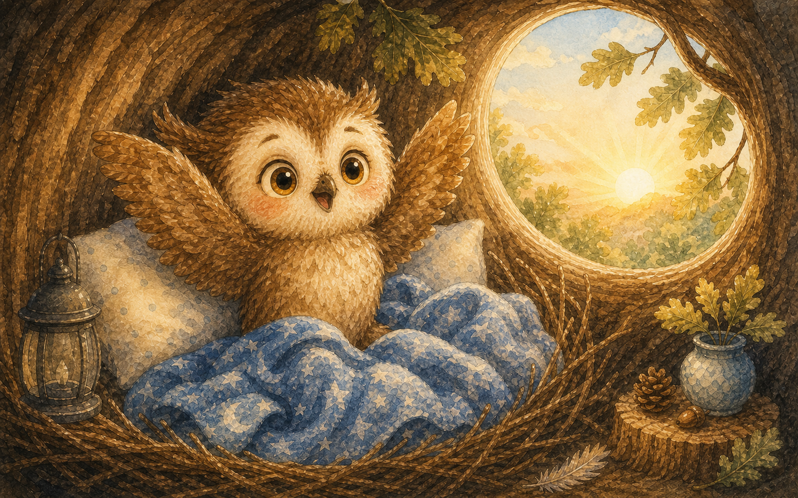

잠이 오지 않는 밤
아기 부엉이 보리는 둥지 안에서 눈만 깜빡였어요. 깜깜한 밤이 되면 어쩐지 가슴이 콩콩 뛰었지요.
"오늘도 잠이 안 와."

아기 부엉이 보리는 둥지 안에서 눈만 깜빡였어요. 깜깜한 밤이 되면 어쩐지 가슴이 콩콩 뛰었지요.
"오늘도 잠이 안 와."

벽에는 커다란 그림자가 흔들흔들 움직였어요. 보리는 이불을 꼭 끌어안았답니다.
"저게 뭐지? 조금 무서워."

엄마 부엉이가 다가와 작은 별빛 등불을 켜 주었어요. 그러자 그림자는 그냥 흔들리는 나뭇가지였지요.
"무서운 게 아니라, 바람이 인사한 거란다."

창밖에서 반딧불이들이 반짝반짝 빛났어요. 밤에도 깨어 노는 친구가 이렇게 많았답니다.
보리는 살짝 웃으며 손을 흔들었어요.

둥근 달이 노란 빛으로 보리를 감싸 주었어요. 달빛은 따뜻한 담요처럼 부드러웠지요.
"잘 자라, 작은 부엉아."

밤바람이 나뭇잎을 사르륵 흔들며 지나갔어요. 보리는 그 소리가 자장가처럼 들렸답니다.
무서운 소리가 아니라 포근한 소리였어요.

엄마는 별을 하나, 둘, 셋 함께 세어 보자고 했어요. 별을 세는 동안 마음이 점점 차분해졌지요.
"별 하나에 하품 하나."

보리의 눈꺼풀이 스르르 무거워졌어요. 어둠은 더 이상 무섭지 않고 포근하게 느껴졌답니다.
"밤은 쉬는 시간이구나."

보리는 엄마의 날개 곁에서 새근새근 잠이 들었어요. 작은 등불은 밤새 보리를 지켜 주었지요.
꿈속에서 보리는 별 위를 날았답니다.

아침 해가 떠오르자 보리는 기지개를 쭉 켰어요. 이제 밤이 와도 혼자 잘 수 있을 것 같았답니다.
"오늘 밤도 잘 자야지!"